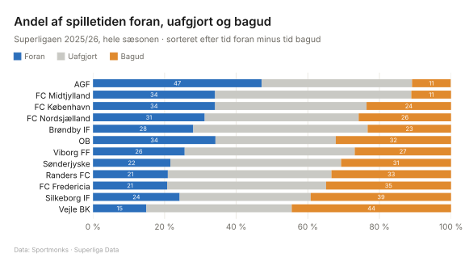
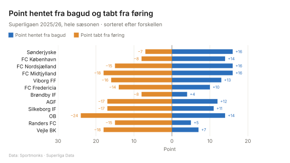
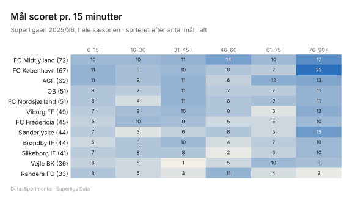
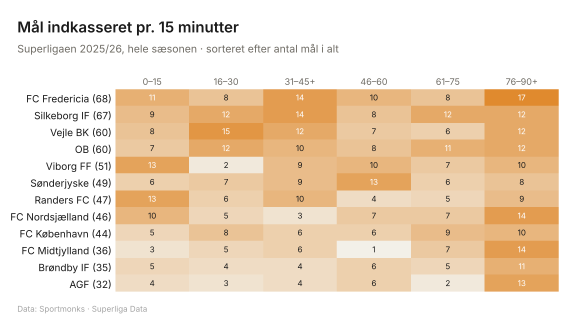

Superligaen i tal 2025/26
Sæson 2025/26 · afsluttet
Sæson: 2026/27 · 2025/26 · 2024/25 · 2023/24 · 2022/23 · 2021/22 · 2020/21
Game states
Game states: Hvor stor en del af de 90 minutter holdet har været foran, uafgjort og bagud. Mål i tillægstid tæller på periodens sidste minut. Se metoden.

Den alternative tabel
Den alternative tabel: Placering, hvis alle kampe var stoppet efter 15, 30, 45, 60 eller 75 minutter, og den rigtige placering (90’). Ved stop sorteres efter point; ved 90’ også efter målforskel og scorede mål. Hold musen over et tal for at se point.
| Hold | 15’ | 30’ | 45’ | 60’ | 75’ | 90’ | Point |
|---|---|---|---|---|---|---|---|
| AGF | 1 | 1 | 1 | 1 | 1 | 1 | 67 |
| FC Midtjylland | 2 | 3 | 3 | 2 | 2 | 2 | 60 |
| FC Nordsjælland | 5 | 5 | 4 | 3 | 3 | 3 | 50 |
| Brøndby IF | 4 | 2 | 2 | 4 | 4 | 4 | 45 |
| Viborg FF | 6 | 4 | 5 | 5 | 5 | 5 | 44 |
| Sønderjyske | 3 | 6 | 6 | 6 | 6 | 6 | 44 |
| FC København | 7 | 7 | 8 | 7 | 7 | 7 | 51 |
| OB | 8 | 8 | 7 | 8 | 8 | 8 | 41 |
| Silkeborg IF | 10 | 10 | 9 | 10 | 11 | 9 | 36 |
| Randers FC | 12 | 11 | 11 | 9 | 9 | 10 | 35 |
| FC Fredericia | 11 | 9 | 10 | 11 | 10 | 11 | 34 |
| Vejle BK | 9 | 12 | 12 | 12 | 12 | 12 | 24 |
Comebacks og føringer
Point hentet fra bagud: point i kampe, hvor holdet på et tidspunkt var bagud. Point tabt fra føring: 3 minus point i kampe, hvor holdet på et tidspunkt var foran.

Scoringstidspunkter
Intervaller: 0–15, 16–30, 31–45+ (inkl. tillægstid i 1. halvleg), 46–60, 61–75 og 76–90+ (inkl. tillægstid). Tal i parentes er mål i alt.

